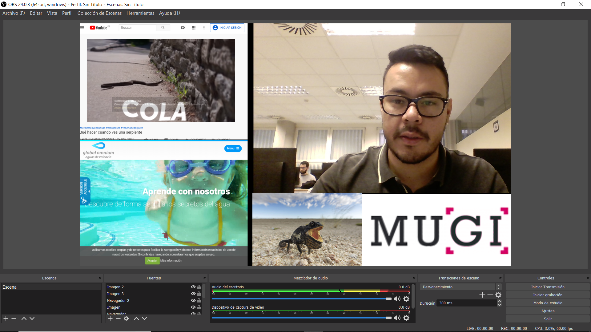
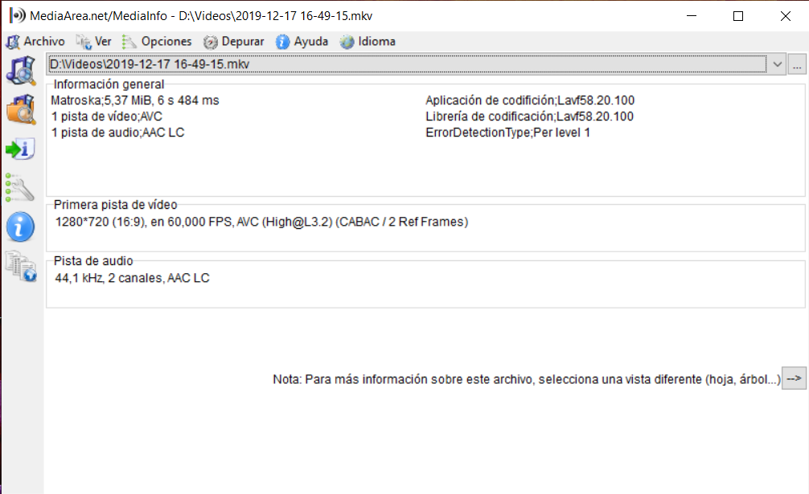
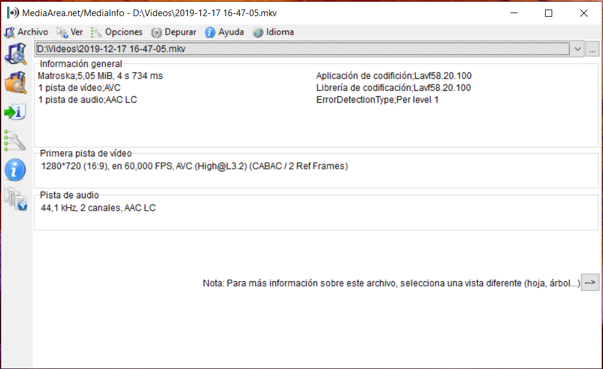

A) Realice Realice
una captura de pantalla de la interfaz principal de OBS donde se
puedaobservar
la definición de su escena y las fuentes utilizadas. Incorpore
la captura depantalla
a su portafolio.

B)
Incorpore el tipo de contendor y las características de los
streamins de audio y video.
High
Quality Streaming

Low Quality Streaming
